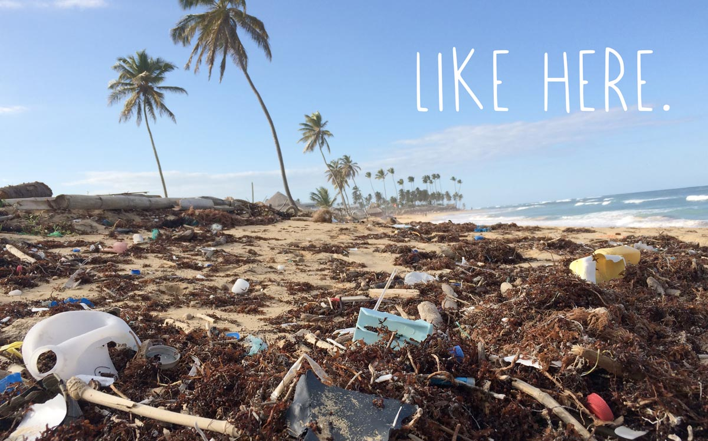
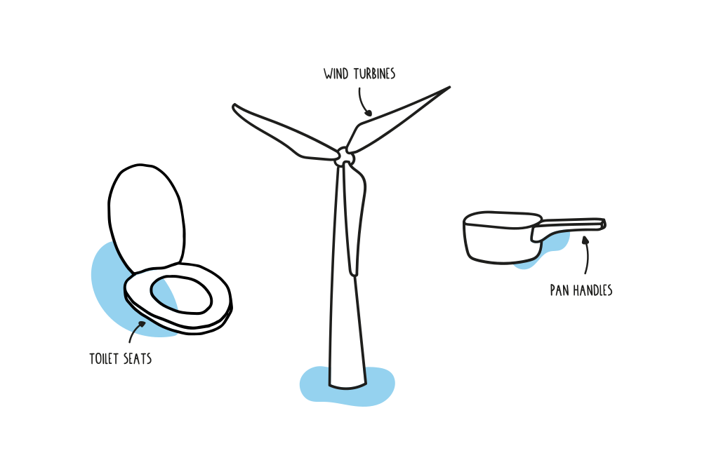
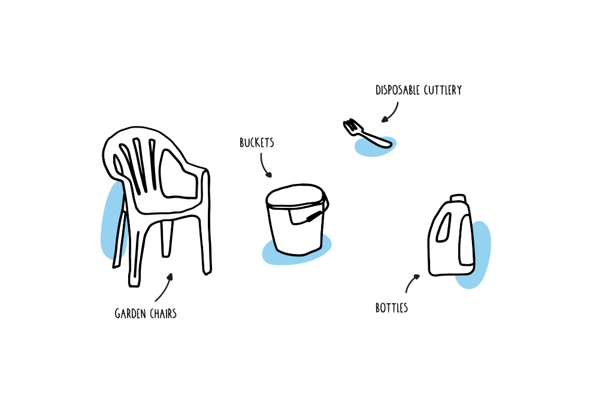

Mari kita mulai dari awal
Meskipun Anda dapat menggunakan berbagai bahan dalam mesin CNC, bahan yang paling umum digunakan adalah:
- Logam: Seperti aluminium, kuningan atau baja.
- Plastik: Seperti Asetal (POM), Akrilik (PMMA), Polycarbonate (PC) dan Polypropylene (PP).
- Kayu: Seperti kayu keras, kayu lapis atau kayu lunak .
- Busa: Seperti busa ukiran dan busa kaku, yang cenderung lebih ringan namun tahan lama.
Pro-tip: lihat di bawah data sheet cnc Anda dan lihat apakah Anda dapat mengenali jenis materialnya.
Tip Umum pada Mesin CNC Bahan Tertentu
Material ada dimana-mana di sekitar kita.
Pertimbangkan bahan non-logam: Jangan menganggap logam adalah pilihan terbaik Anda. Bahan non-logam menjadi populer karena ringan namun tahan lama — seperti busa yang dapat Anda cetak menjadi berbagai bentuk. Non-logam juga mempertahankan detail kecil selama pemotongan. Jika proyek Anda tampak seperti proyek yang mungkin mendapat manfaat dari penggunaan non-logam, banyak pilihan yang dapat menguntungkan produk akhir Anda.
Ketahui perbedaan antara busa: Ingatlah bahwa busa kaku dan busa ukiran memiliki tujuan yang berbeda. Meskipun keduanya ringan, namun tahan lama, busa kaku adalah yang terbaik untuk suku cadang dengan fokus pada integritas dan stabilitas struktural, sedangkan busa ukir sering digunakan sebagai insulasi dan prototipe untuk cetakan.
Pertimbangkan fenolat: Fenolik adalah pilihan bagus, terutama ketika Anda harus mematuhi peraturan atau spesifikasi khusus untuk proyek terkait militer.
Pelajari tentang plastik yang berbeda: Anda dapat memilih dari berbagai macam plastik yang beragam. Asetal sering digunakan untuk penggantian bushing dan bantalan. Polimer polivinilidena fluorida, atau PVDF, digunakan dalam isolasi untuk kabel listrik. Anda dapat menggunakan UHMW dalam biomaterial medis, seperti perangkat pengganti lutut, pinggul, dan tulang belakang. Ini hanyalah beberapa contoh kemungkinan tak terbatas yang ditawarkan oleh plastik.

Akankah Bagian Digunakan Di Luar Ruangan atau Di Dalam Ruangan? 🤯
Lingkungan luar dan dalam ruangan sangat berbeda — yang satu sepenuhnya bergantung pada cuaca, sedangkan yang lain biasanya merupakan lingkungan yang jauh lebih terkendali. Misalnya, di lingkungan luar ruangan , Anda perlu merencanakan kelembapan. Bahan Anda harus mampu menahan efek korosi, seperti karat, untuk mempertahankan integritasnya dari waktu ke waktu. Busa kaku memberikan contoh yang bagus dari bahan yang tahan terhadap kelembaban dan karat sambil juga mempertahankan integritas struktural.
Temperatur yang ekstrim, baik tinggi maupun rendah, juga akan menghilangkan material tertentu sebagai pilihan terbaik. Anda mungkin juga harus memenuhi kode untuk spesifikasi yang diatur FDA. Di mana produk Anda akan digunakan atau disimpan dan bagaimana mereka bereaksi terhadap kelembaban dan perubahan suhu yang ekstrem menjadi landasan dalam memutuskan bahan mana yang akan digunakan.
Pro-tip: Anda mungkin juga harus memenuhi kode untuk spesifikasi yang diatur FDA.
Berapa Beban Stres Material?
Pertama, Beban tegangan tinggi dapat menyebabkan material tertentu mengalami regangan atau bahkan putus. Saat Anda mempertimbangkan bahan mana yang akan digunakan untuk bagian Anda, pastikan Anda memperhitungkan beban stres. Jika bagian Anda akan terkena tegangan tinggi, bahan pembuatnya akan membutuhkan kemampuan untuk menahan beban dan mencegah deformasi.
Apa itu Toleransi Dimensi Material?
Anda perlu mengetahui toleransi yang diperlukan untuk bagian Anda. Jika Anda bekerja dari desain atau sketsa bagian lama, sebaiknya pastikan toleransinya sesuai. Kesalahan ketik dapat dengan mudah terjadi dalam dokumentasi. Bahkan jika informasinya benar, jika Anda dapat membuat penyesuaian untuk melonggarkan toleransi dan masih membiarkan bagian tersebut bekerja secara maksimal, Anda dapat menghemat uang dengan mengevaluasi kembali toleransi. Toleransi yang lebih ketat seringkali lebih mahal untuk diproduksi.

Apa Pengikatan yang Diperlukan?
pertimbangkan itu saat Anda memilih bahan. Bahan mempengaruhi seberapa aman pengencang akan cocok bersama. Bahan yang berbeda memiliki sifat yang berbeda — misalnya , kekuatan, ketahanan korosi, kerapuhan dan korosi galvanik — jadi Anda harus memilih bahan yang mencerminkan sifat yang Anda inginkan untuk dimiliki oleh pengencang. Bahan yang paling umum untuk pengencang adalah baja , tetapi Anda juga dapat membuat pengencang berkualitas dari bahan lain.

Suhu Tinggi dan Dampaknya pada Material (🎉) Suhu tinggi memainkan peran penting ketika memilih bahan apa yang akan digunakan, karena banyak bahan akan rusak di bawah panas yang ekstrem. Plastik populer yang kehilangan kekuatannya di bawah suhu tinggi adalah polivinil klorida, atau PVC. Meskipun memiliki peringkat ketahanan api yang baik, suhu kerjanya sekitar 176° F. Stabilitas cenderung hilang sekitar 280 ° F, sehingga tidak layak untuk beberapa proyek.
Yang paling umum adalah:
Bahan yang Biasa Digunakan dalam Pemesinan CNC Presisi Material Populer Dipilih oleh Penyedia Layanan Pemesinan Presisi Bagian mesin presisi CNC yang sangat akurat dapat diproduksi dari banyak bahan, yang tercantum sebagai berikut:
Aluminium: Dianggap eksotis dalam kaitannya dengan manufaktur, aluminium mungkin merupakan bahan penggilingan CNC yang paling banyak digunakan. Kemampuan untuk dikerjakan lebih cepat daripada yang lain membuat aluminium menjadi bahan yang lebih berguna untuk permesinan CNC. Karena ringan, non-magnetik, tahan korosi dan murah, aluminium banyak digunakan dalam produksi komponen pesawat, suku cadang otomotif, rangka sepeda, dan wadah makanan.
Stainless Steel: Paduan baja tahan karat tahan terhadap sebagian besar noda dan karat. Disukai karena kekuatan dan ketahanannya terhadap korosi, bahan ini digunakan untuk segala hal mulai dari peralatan bedah hingga perangkat keras elektronik. Baja tahan karat adalah bahan yang sangat serbaguna dan relatif ringan dan tahan lama, memperluas aplikasinya di seluruh industri.
Baja karbon: Baja karbon juga merupakan salah satu bahan populer yang dipertimbangkan untuk permesinan CNC. Ini tersedia dalam berbagai formulasi dan Anda dapat memilih dari mereka tergantung pada kebutuhan aplikasi Anda. Bahan ini sebagian besar dipilih untuk pemesinan CNC karena daya tahan, keamanan, umur simpan yang lama, keterjangkauan, dan sifatnya yang ramah lingkungan.
Kuningan: Secara luas ditetapkan sebagai salah satu bahan termudah dan hemat biaya untuk digunakan dengan layanan pemesinan presisi, kuningan dipilih untuk membuat bagian rumit yang memerlukan fitur canggih. Dengan kemudahan pemesinan, kehalusan, dan hasil akhir yang bersih, kuningan digunakan antara lain dalam pembuatan peralatan medis, barang konsumsi, perangkat keras dan kontak elektronik, fitting, produk komersial, dan lain-lain.
Titanium: Titanium tahan terhadap panas dan korosi, menjadikannya pilihan yang layak untuk banyak aplikasi industri. Tahan terhadap garam, dan air, titanium banyak dipilih dalam pembuatan implan medis, komponen pesawat, dan perhiasan, antara lain.
Magnesium: Magnesium adalah logam struktural paling ringan yang banyak digunakan oleh penyedia layanan pemesinan presisi. Menampilkan kemampuan mesin yang sangat baik, magnesium memberikan kekuatan dan kekokohan yang membuatnya sangat cocok untuk aplikasi di beberapa sektor industri.
Monel: Permintaan untuk suku cadang mesin CNC Monel selalu tinggi. Ini sebagian besar digunakan untuk aplikasi yang terpapar lingkungan korosif dan menuntut kekuatan yang lebih tinggi. Ada sangat sedikit toko mesin CNC yang mengkhususkan diri pada mesin Monel, karena perkakas itu sulit, dan membutuhkan pengalaman tinggi.
Inkonel: Ini adalah superalloy berbasis nikel, yang telah mendapatkan popularitas besar dalam beberapa tahun terakhir karena berbagai fitur yang bermanfaat. Bagian inconel cocok untuk lingkungan, di mana mereka dapat mengalami korosi atau oksidasi berair. Ini juga dapat ideal untuk aplikasi, di mana bagian-bagiannya dapat mengalami tekanan dan panas yang ekstrem.
Ok itu saja untuk Dasar-dasar Mesin CNC, kami harap Anda belajar sesuatu! Lihat bab berikutnya untuk lebih mendalami beberapa topik ini.